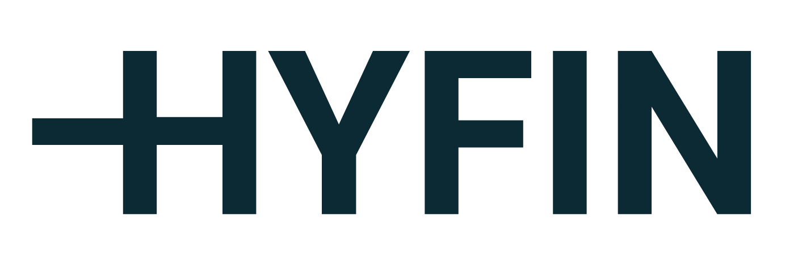

Aadesh Salecha
Founding Engineer @ Hyfin Previously: Stanford / Amazon / DraftKings
I'm a Founding Engineer at Hyfin, where I'm building GAIA, a platform that synthesizes asset performance and market data to power clean energy loan origination. I design the agentic data pipelines and risk intelligence tools aimed at closing the $4T+ clean energy financing gap across South Asia and Africa.
I recently finished my MS in Computer Science at Stanford, where I built geospatial ML for carbon sequestration with Prof. David Lobell's lab at the Doerr School of Sustainability, and studied human-like biases in LLMs (PNAS Nexus, WIRED). Before that, I worked on AI/ML at Amazon and large-scale financial systems at DraftKings.
I'm a Founding Engineer at Hyfin in San Francisco, where I'm building GAIA, a fintech platform that synthesizes asset performance and market data for clean energy loan origination. I design agentic data enrichment pipelines that combine LLMs and web scraping to create data for a new asset class with no track record, and I'm architecting risk intelligence tools aimed at the $4T+ clean energy financing gap across South Asia and Africa. I also lead the rollout of AI-native workflows across the team.
I completed my MS in Computer Science at Stanford University in 2026. There, I worked as an AI/ML researcher with Prof. David Lobell and the Center on Food Security and the Environment at the Stanford Doerr School of Sustainability, building geospatial ML pipelines on Google Earth Engine, Landsat, and Sentinel-2 imagery to detect tree species across cropland in the Global South. This work supports verification of the 5+ Gt CO2/year sequestration potential of integrating trees into global cropland. I also won Stanford's first Green AI Hackathon by building a geothermal site prediction system on AlphaEarth satellite embeddings (93% AUC).
Earlier at Stanford, I worked with Prof. Johannes Eichstaedt on applying cognitive science and psychometrics to evaluate LLMs. Our paper showing that LLMs exhibit human-like social desirability biases was published in PNAS Nexus and covered by WIRED.
In 2025, I was an AI/ML Engineer at Amazon (AWS SageMaker HyperPod), where I designed an agentic AI system that combines telemetry, time-series signals, and RAG-based diagnosis to auto-resolve ML infrastructure failures, and cut GPU energy waste by about 200 kg CO2e per day. Before Stanford, I was a Senior Software Engineer on the Financial Platform team at DraftKings, building production systems that handled billions of requests for millions of users. I received my BS in Computer Science, summa cum laude, from the University of Minnesota.
Outside of work, I enjoy climbing, strength training, hiking and brewing coffee.
Based in San Francisco. Email is the easiest way to reach me.
Experience
-

Hyfin Founding Engineer May 2026 – present -
 Stanford
MS CS · AI/ML Researcher, Lobell Lab
2023 – 2026
Stanford
MS CS · AI/ML Researcher, Lobell Lab
2023 – 2026
-
 HAI
Stanford HAI
Affiliated researcher
2023 – 2026
HAI
Stanford HAI
Affiliated researcher
2023 – 2026
-
 Amazon
AI/ML Engineer, SageMaker HyperPod
May – Sept 2025
Amazon
AI/ML Engineer, SageMaker HyperPod
May – Sept 2025
- DraftKings DraftKings Senior Software Engineer, Financial Platform Dec 2021 – Jun 2024
Education MS Computer Science, Stanford University (2024–2026) BS Computer Science, summa cum laude, 4.0 GPA, University of Minnesota (2018–2021)
Honors & press
- Award
- Winner, Stanford's first Green AI Hackathon (findgeothermal.com)
- Press
- WIRED: “Chatbots, Like the Rest of Us, Just Want to Be Loved”
- Press
- The Stanford Daily: “‘AI Into the Wild’ connects Stanford to local flora and fauna at Jasper Ridge”
- Scholarships
- ExxonMobil Scholarship; UROP Research Scholarship; Tom Niccum Grant; Google Research Mentorship nominee; Dean's List 2018–2020
Publications
- Citations
- 320
- h-index
- 6
- Publications
- 16
Featured
-
PNAS Nexus
Under review
-
In review
Structured AI Dialogues Can Increase Happiness and Meaning in Life
Under review
-
PsyArXiv
A Computational Model of Reward Learning and Habits on Social Media
PsyArXiv Preprints (under review)
-
In review
The Answer to the Mental Health Crisis: Examining Media Bias Regarding Psychedelic Treatments for Depression and PTSD Using Natural Language Processing
Under review
-
JCR
No Good Time to Negotiate? Track Two Diplomacy within the Protracted Israel-Palestine Conflict as Strategic Joint Thinking
Journal of Conflict Resolution (under review, submitted Dec 2023)
2025
-
npj Digit Med
Monitoring the Opioid Epidemic via Social Media Discussions
Nature Partner Journals: Digital Medicine, 2025
2024
-
JCSS
Influence of Emotions on Coping Behaviors in Crisis: A Computational Analysis of the COVID-19 Outbreak
Journal of Computational Social Science, 7, 1599–1623, October 2024
-
NCMR
The Language of Conflict Transformation: Assessing Psychological Change Patterns in Israeli-Palestinian Track Two Interactive Problem Solving
Negotiation and Conflict Management Research, 2024
2022
-
SNAM
Fake News Spreader Detection using Trust-based strategies in Social Networks with Bot Filtration
Social Network Analysis and Mining (SNAM), 2022
-
ICA
Public's Discrete Emotions During the COVID-19 and Impacts on Their Coping Behaviors in the U.S.
72nd Annual International Communication Association Conference, 2022
2021
-
J. Pract.
Relationship between Citizen-Eyewitness Images and Audience Engagement with News
Journalism Practice, 2021
-
Thesis
Empirical Study of the Spread of Misinformation: A Big Data Approach
Undergraduate Thesis (Summa Cum Laude), University of Minnesota Digital Conservancy, 2021
2020
-
IEEE SSCI
Emergence and Stability of Self-Evolved Cooperative Strategies using Stochastic Machines
IEEE Symposium Series on Computational Intelligence (SSCI), 2020
-
ASONAM
Detecting Fake News Spreaders in Social Networks using Inductive Representation Learning
IEEE/ACM International Conference on Advances in Social Networks Analysis and Mining (ASONAM), 2020